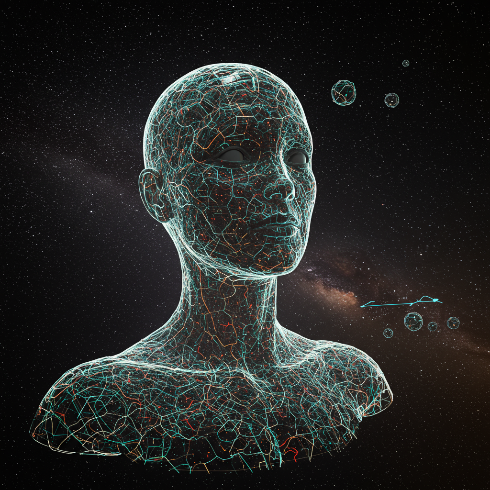

Ogni cerchio invisibile sull'immagine è una parte del sistema IA. Passaci sopra per vederlo, clicca per leggere cosa fa e quali API lo riguardano.
Occhi · percezione visiva
Orecchio · segnali 1D
Vertice · apprendimento
Bocca · output strutturato
Nodi a destra · rappresentazioni
Collo · ruoli base
Torace · sicurezza e protezione